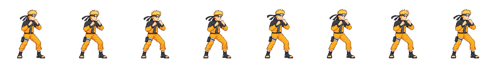
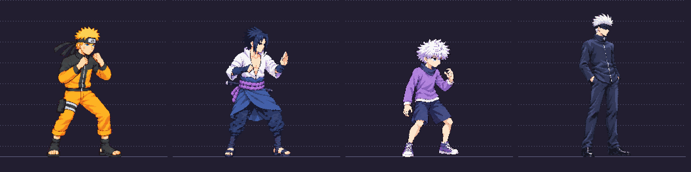
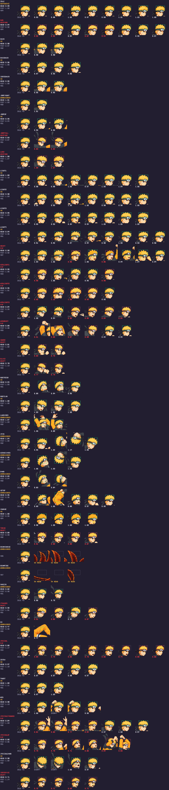

Needs your approval: approve naruto idle v04. New idle follows approved model v03. No other animation redrawn yet.
8 frames,150ms each. Internal head consistency: ok,8.2% range under12% limit. Independent audit used both genuine gold hair planes; normal packer labels idle as reference.
Review limits: skull roughly30±4px,target28.57; hidden crown prevents exact7-head verification. Slight foot/loop jitter; shoulder proxy73px vs74px minimum. Recommendation: HOLD approval for correction. Internal consistency passes, but full-hair size did not shrink (old34x18,new35x19) and the requested8% reduction is not demonstrated. Old animations remain old proportions.



